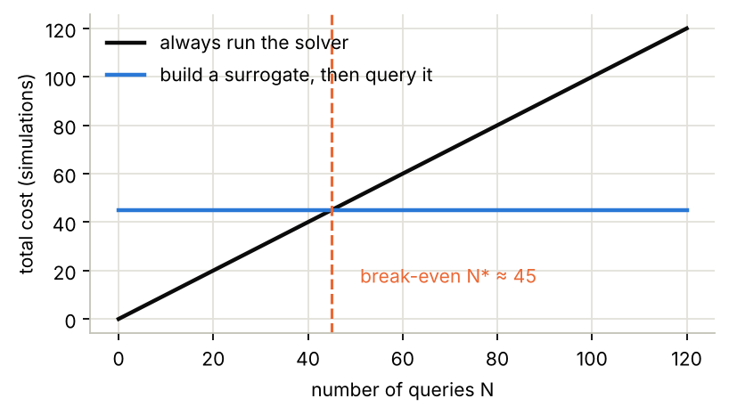
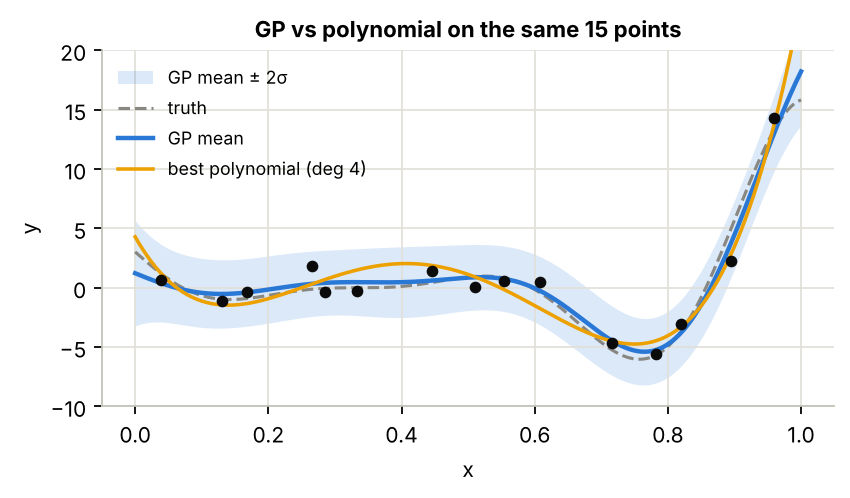
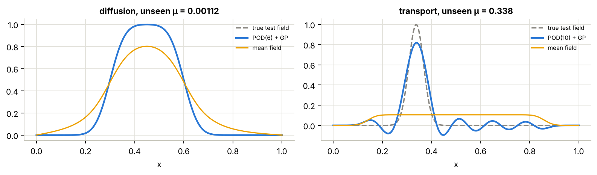
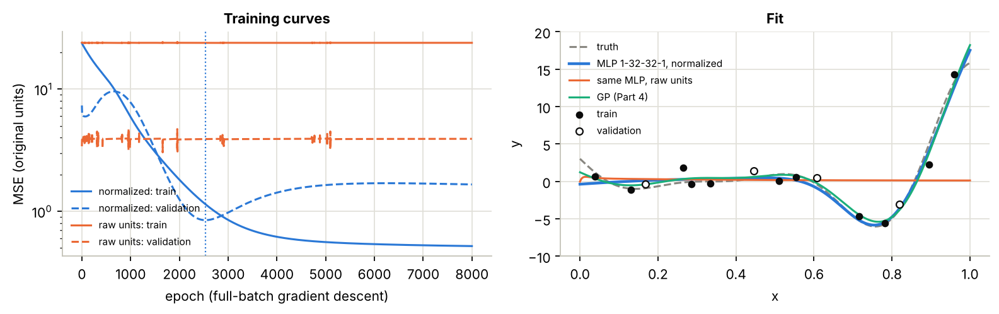
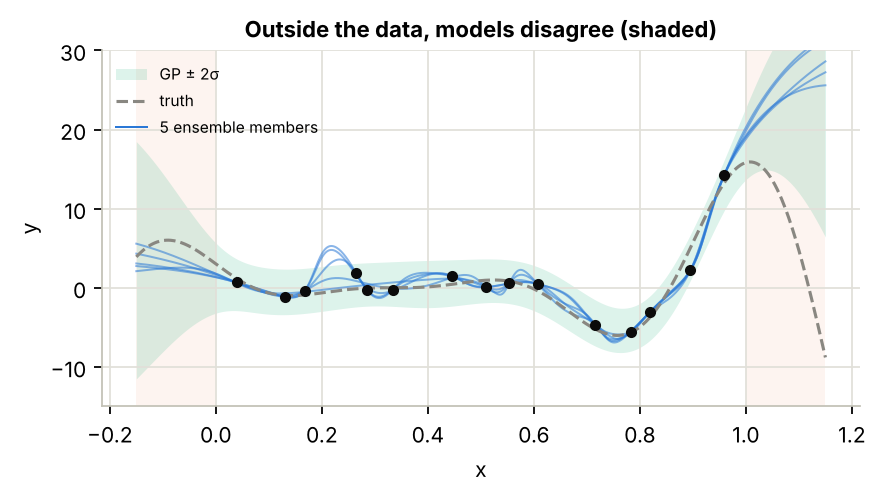
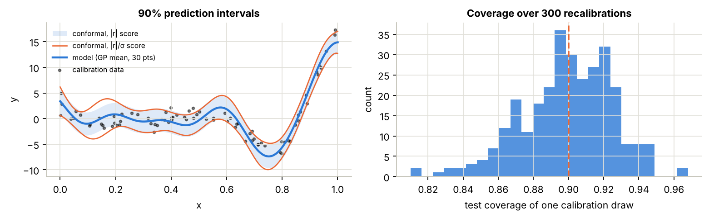
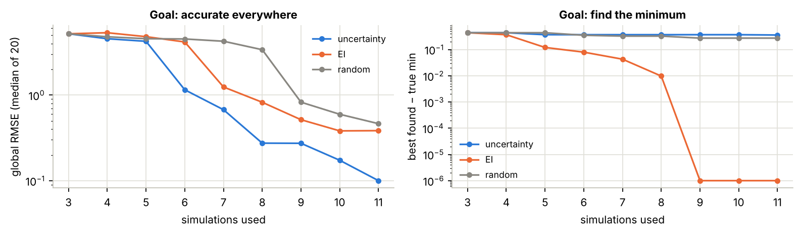

A simulation that takes hours answers one question at a time. A surrogate answers thousands per second —
if it was trained on the right runs, tested honestly, and used where it knows what it is talking about.
This is a hands-on tour of how to build one, from the first design of experiments to uncertainty you can check.
Companion material. Every number and static figure on this page is produced by the notebook
on_surrogate_modeling.ipynb (NumPy, SciPy,
scikit-learn — no deep-learning framework); the derivations are written out in full in the
lecture notes (PDF). Gaussian processes and Bayesian optimization
get their own interactive article: A numerical tour of GP and BO.
Engineering design runs on simulations: computational fluid dynamics for a wing, finite elements for a
bracket, a thermal model for a battery pack. They are accurate and slow. One run can take hours on a
cluster, and a design study wants hundreds of them — an optimizer probing the design space, an
uncertainty study sampling manufacturing scatter, an engineer dragging a slider in a design review and
expecting an answer before the meeting ends.
A surrogate model (also called a metamodel, response surface, emulator or reduced-order model)
is the standard way out : run the expensive
simulation a limited number of times, then train a cheap model \hat y(x) on those input–output
pairs and query it instead. The idea is simple; doing it well is not. This article walks through the
decisions that matter, in the order you meet them, with an interactive figure wherever playing with
the idea beats reading about it. The topic sequence follows the open course at
surrogatemodels.com.
1. What a surrogate is, and when it pays
Think of the simulation as a function y = f(x). The input x collects the
design and operating parameters (a few angles and thicknesses, a Mach number); the output y
is either a handful of scalars (lift, mass, peak stress) or a whole field (the pressure on every surface
node). Evaluating f is the expensive part. A surrogate is any model
\hat y \approx f fitted to a finite set of evaluations
\{(x_i, y_i)\}_{i=1}^{D} — a polynomial, a Gaussian process, a reduced basis, a neural network.
Building it is an investment. With c_{\mathrm{sim}} the cost of one simulation,
C_{\mathrm{train}} the cost of training, and c_{\mathrm{inf}} the (tiny) cost
of one prediction, answering N questions costs
so the surrogate pays for itself after N^* = (D\,c_{\mathrm{sim}} + C_{\mathrm{train}})/(c_{\mathrm{sim}} - c_{\mathrm{inf}})
queries — roughly the size of its own training set. With 40 training runs and a training cost worth
five more, the break-even is at 45 queries.

Cost in units of one simulation, for D = 40, C_{\mathrm{train}} = 5,
c_{\mathrm{inf}} = 10^{-4}. Below the break-even point, just run the solver.
Two consequences shape everything that follows. First, the training runs are precious: every one
should teach the model something new (Part 2). Second, a surrogate is only worth its speed if you know
how wrong it is (Parts 3 and 7). A fast wrong answer is worse than a slow right one, because people act on it.
2. Sampling the design space
Which D input points should we simulate? This is the design of experiments (DOE).
Physical experiments are noisy, so classical DOE repeats points and blocks factors. Computer experiments
are usually deterministic — rerunning the same input gives the same output — so repeats are wasted and the
goal becomes to fill the space .
The obvious choice, a grid, scales badly. With L levels per input and d
inputs, a full factorial costs L^d runs: three levels of ten parameters is 59 049
simulations. Worse, if one input turns out not to matter, a 16-point grid in two inputs collapses onto
only 4 distinct values of the other one.
A Latin hypercube (LHS) fixes the second problem
and sidesteps the first: split each input's range into D equal strata and place exactly one
point in each stratum of each input, pairing the strata at random. Every input then sees
D different values, whatever D is. The random pairing can still put points
next to each other, so in practice one keeps the best of many Latin hypercubes under a space-filling
criterion, typically maximin: maximize the smallest distance between any two points
.
Play with it. Switch designs and resample. Watch the three scores: the closest pair
(higher is better), the radius of the largest empty disc (lower is better — that is where the surrogate
will be guessing), and how many distinct values each input receives (the ticks on the edges).
In the notebook's 16-point example a plain Latin hypercube had a closest pair only 0.062 apart —
closer than plain random sampling (0.092) — while the maximin version reached 0.157 and kept
16 levels per input; the grid has a perfect spacing of 0.25 but only 4 levels.
Stratification and spread are different properties; maximin LHS gets both.
Check the data before fitting. A surrogate faithfully learns whatever it is given,
including a run that stopped before convergence, a mesh that was too coarse in one corner of the design
space, or a failed case that wrote zeros. Plot every output against every input, check residual
histories, and remove or rerun outliers before they become features of the model.
3. Fitting a response surface, and testing it honestly
The oldest surrogate is a polynomial response surface,
\hat y(x) = \sum_{k=0}^{p} \beta_k\,\phi_k(x), with basis functions
\phi_k (here Legendre polynomials, which are far better conditioned than raw powers
x^k). Stacking the basis at the training points into a matrix
\Phi_{ik} = \phi_k(x_i), least squares minimizes
\lVert \Phi\beta - y \rVert^2, whose minimizer solves the normal equations
\Phi^{\top}\Phi\,\hat\beta = \Phi^{\top} y .
Our running example is the Forrester function f(x) = (6x-2)^2\sin(12x-4) on
[0,1], observed at 15 points with
Gaussian noise of standard deviation 1 (standing in for discretization error, or a solver tolerance).
Which degree p should we use?
The training error cannot tell us: it always goes down as p goes up, and reaches zero once there
are as many coefficients as points. What we care about is the error on new inputs. For squared
error it splits into three parts ,
where the expectation is over the random training sets: a low degree is too rigid (bias), a high degree
chases the noise of the particular sample it saw (variance).
So we must hold data back. The cleanest protocol uses three disjoint sets: training data to fit,
validation data to make choices (degree, kernel, network size, when to stop), and a test set
touched once, at the end, to report the error. When runs are too few to spare, k-fold
cross-validation reuses them: split into k folds, fit on k-1,
predict the fold left out, rotate, and pool the errors.
Play with it. Move the degree slider and watch the black training error fall
monotonically while the orange test error (computed on 1 000 points the fit never sees) turns back up.
The blue curve is 5-fold cross-validation — computed from the training points alone — and its minimum
(circled) is the degree you would actually pick. Drag a point to create an outlier, add noise, or
reduce the number of points, and see how fragile high degrees are. Click the right panel to jump to a degree.
On the notebook's sample, degree 12 reaches a training RMSE of 0.22 but a test RMSE of 44 — the polynomial
swings wildly between and beyond the points. Cross-validation picks degree 4 (test RMSE 1.40); the best
degree in hindsight would have been 7. That gap is normal: with 15 points, cross-validation is itself a
noisy estimate. It is a tool for avoiding disasters, not an oracle.
Measure more than one error. RMSE is in the units of y; the relative
error \lVert y-\hat y\rVert_2 / \lVert y\rVert_2 is scale-free;
R^2 = 1 - \sum(y_i-\hat y_i)^2/\sum(y_i-\bar y)^2 compares with always predicting the mean;
and the maximum error finds the one bad region an average hides. For the degree-4 fit these are 1.40,
31 %, 0.90 and 8.3: a respectable R^2 hiding a large local error near x = 1.
Split by run, not by point. When each simulation produces a field, its thousands of nodal
values are strongly correlated. Putting some nodes of a run in training and others in test lets the model
interpolate between neighbours it has already seen, and the test error looks excellent for the wrong
reason. Whole runs go to one side or the other.
4. Gaussian processes
A polynomial imposes a global shape. A Gaussian process (GP) — known as kriging in
geostatistics and in the design-of-computer-experiments literature — instead
assumes that nearby inputs give similar outputs, through a covariance (kernel) function such as
k(x, x') = \sigma_f^2 \exp\!\left(-\frac{\lVert x - x'\rVert^2}{2\ell^2}\right),
with a length-scale \ell per input and, for noisy data, a noise variance
\sigma_n^2. Conditioning this prior on the training data gives a closed-form predictive mean
and variance at any new input x_*:
where K_{ij} = k(x_i, x_j) and (k_*)_i = k(x_*, x_i). The hyperparameters are
fitted by maximizing the marginal likelihood of the data. The cost is O(D^3) time and
O(D^2) memory, comfortable up to a few thousand runs.

Same 15 noisy points as above. The GP's test RMSE is 0.62 against 1.40 for the
cross-validated polynomial, and its ±2σ band contains the true function everywhere on [0, 1].
That built-in error bar is why GPs are the default surrogate for small, smooth, low-to-moderate-dimensional
problems, and the engine of Bayesian optimization (Part 7). The derivation of the predictive equations,
kernel choice, and interactive versions live in the companion
article and in the lecture notes.
Many simulations return a field — pressure on a wing surface, temperature in a part — sampled at
M points, with M in the thousands or millions. Training one regression per
point would be wasteful: neighbouring values move together. The classical answer is to find a small
basis that the fields actually live in.
Collect N training fields (snapshots), subtract their mean \bar u,
and stack them as the columns of Y \in \mathbb{R}^{M\times N}. Its singular value
decomposition Y = U\Sigma V^{\top} gives orthonormal POD modes\phi_k (the columns of U), ranked by singular values
\sigma_1 \ge \sigma_2 \ge \dots.
Any field is then approximated by
By the Eckart–Young theorem, no other K-dimensional basis reproduces the snapshots with
a smaller squared error, and that error is exactly the discarded "energy"
\sum_{k>K}\sigma_k^2. The surrogate problem shrinks from M outputs to
K: learn the coefficients a_k(\mu) as functions of the parameters — here with
one GP each — and rebuild the field .
How small can K be? It depends entirely on the physics. We compare two one-parameter families:
a square pulse spreading by diffusion (parameter: time) and a narrow bump transported
along the domain (parameter: position).
Play with it. For diffusion, two or three modes already reproduce an unseen field almost
perfectly. Switch to transport and push K up: the singular values barely decay, and even
ten modes leave visible wiggles. Move the "unseen" slider between training positions to see where
the linear basis struggles most, and reduce the number of snapshots to see how coverage matters.
In the notebook, 99 % of the energy takes 2 modes for diffusion and 14 for transport. With POD plus one GP
per coefficient, unseen diffusion fields are predicted to 0.01 % relative error (the mean field alone is
off by 24 %). For transport, ten modes plus GPs give 22 % — exactly the error of projecting the true field
onto the ten modes. The regression is not the bottleneck; the linear basis is.

POD + GP on unseen parameters. Left: diffusion, 6 modes. Right: transport, 10 modes —
the prediction shows the ringing typical of a moving feature represented in a fixed linear basis.
Smooth, diffusive physics compresses well. Moving shocks, fronts and wakes do not: each position needs its own
modes (the family has a large Kolmogorov n-width). That limitation motivates
nonlinear reductions — shifted or registered POD, autoencoders, and the field networks of Part 8.
6. Neural-network surrogates
A multilayer perceptron (MLP) composes simple layers,
h^{(l)} = \tanh\!\big(W^{(l)} h^{(l-1)} + b^{(l)}\big), with a linear output layer. Training
minimizes the mean squared error L(w) = \tfrac1n\sum_i (\hat y_i - y_i)^2 by gradient
steps w \leftarrow w - \eta\,\nabla_w L, where \eta is the learning rate.
The gradient comes from backpropagation, the chain
rule applied layer by layer from the output back to the input: with
\delta^{(l)} = \partial L/\partial z^{(l)} the sensitivity of the loss to the pre-activations
z^{(l)} of layer l,
The notebook writes this out in NumPy and checks it against finite differences (agreement to
3\times10^{-9} relative error) before training anything — a habit worth keeping whenever you write
a gradient by hand. Adam , the usual optimizer, rescales each
parameter's step by a running estimate of its gradient magnitude.
Normalize inputs and outputs, using training-set statistics only. Engineering inputs come in
physical units; the notebook feeds a position as a percentage of span, x \in [0, 100]. With plain
gradient descent the result is a network stuck at a constant (median test RMSE 4.5 over 8 seeds, against 0.82
after standardizing): the first-layer gradients are a hundred times larger than the others and the tanh units
saturate. With Adam the gap disappears on this example (median 0.97 raw versus 1.23 standardized), because it
rescales every step — one reason it is the default — but standardizing remains the safe habit: it also
matters for initialization, weight decay and losses that mix several outputs.
Play with it. Press Train and watch both learning curves: training error keeps falling, the
validation error (on the hollow points, never used for fitting) flattens or turns up; the dashed line marks
where early stopping would keep the weights. Try plain gradient descent with and without standardization,
push the learning rate until training diverges, widen the network on 8 points to watch it memorize the
noise, and try the smoothed step: networks fit smooth trends first and sharp features last.
That last behaviour — learning low frequencies first, sometimes called spectral bias — is why field
surrogates often feed coordinates through Fourier features before the first layer
. And notice the counts in the widget: a two-layer network of width 16
has 321 weights for a dozen training points. With 11 points and 1 153 weights the notebook's network can
interpolate the noise, so validation-based early stopping (or weight decay) is not optional.

Left: learning curves with plain gradient descent, raw units (orange) versus standardized (blue);
dotted line: early-stopping epoch. Right: the early-stopped network against the GP of Part 4.
On small, smooth problems like this one, a GP remains the stronger and cheaper baseline (test RMSE 0.62 against
0.75 for the network). Networks earn their place when there are many runs, many inputs, or whole fields on
irregular meshes — the territory of Part 8.
7. Trust, uncertainty and design loops
Every surrogate has a domain of validity: the region its training data covered. Inside, it interpolates;
outside, it extrapolates, and nothing in the fitting guarantees anything there. The first check before using
a prediction is therefore whether the query lies inside the training data — in each input's range, but also
in the joint distribution (a combination of extreme values may never have been simulated).
Disagreement as a warning sign
Train several networks from different random initializations — a deep ensemble — and their spread is a cheap uncertainty signal. In the
notebook, the five members' standard deviation averages 0.38 inside the training interval and 1.10 just
outside it. Useful — but the figure also shows the limit: just beyond x = 1 the true
function turns down while every member and the GP band keep going up. Models that agree can be wrong together.

Five networks trained from different seeds (blue) and the GP ±2σ band (green). Shaded: outside the training data.
Intervals with a guarantee: split conformal prediction
Model-based error bars are only as good as the model's assumptions. Split conformal prediction needs none. Keep a calibration set of n runs
the model was not trained on, compute their absolute residuals r_i = |y_i - \hat y(x_i)|, and let
\hat q be the \lceil (n+1)(1-\alpha)\rceil-th smallest. Then for a new point
drawn from the same distribution,
whatever the model. In the notebook, a GP trained on 30 noisy points and calibrated on 200 gives 90 % intervals
that cover 89.6 % of 5 000 test points (89.9 % on average over 300 recalibrations); the GP's own Gaussian
90 % intervals cover only 82.6 %. Dividing the residuals by the model's predicted
\sigma(x) gives intervals that widen where the model is unsure, with the same guarantee.
The guarantee is marginal (on average over inputs) and assumes calibration and use come from the same
distribution — it says nothing about extrapolation.

Left: 90 % split-conformal bands, constant width (blue) and normalized by the GP's σ (orange).
Right: test coverage over 300 independent calibration sets, centred on the 90 % target.
Choosing the next simulation
A surrogate that knows where it is unsure can decide where to simulate next. Uncertainty sampling
runs the solver where the GP's \sigma(x) is largest, improving the model everywhere.
Expected improvement,
balances a low predicted value against high uncertainty and hunts for the minimum. Starting from 3 runs and
adding 8, over 20 random starts, uncertainty sampling reaches a global RMSE of 0.10 (EI: 0.38, random: 0.46),
while EI locates the true minimum in the median run and uncertainty sampling's median run is still 0.36 above it. Each wins at its own
goal — decide which question you are asking before choosing where to sample. Bayesian optimization builds on
exactly this loop .

Median over 20 initial designs. Left: accuracy everywhere. Right: best value found minus the true
minimum (EI reaches it after 9 runs; plotted at 10^{-6}).
Two more tools complete the design loop. Sensitivity analysis propagates input scatter through
the cheap surrogate by Monte Carlo and ranks inputs by the share of output variance they explain (Sobol
indices ). Multi-fidelity models combine many cheap runs
(coarse mesh, simpler physics) with a few expensive ones by learning the difference between them
. And whatever the surrogate proposes as an
optimum, re-run the real solver there before believing it.
8. Where this goes next
Everything above works with a handful of parameters and a scalar or a modest field. Industrial problems bring
millions of mesh nodes, varying geometries and thousands of runs, and that is where deep-learning
architectures come in. A short map:
Networks for fields. On regular grids, convolutional U-Nets
map an input image (geometry mask, boundary conditions) to an output field. On unstructured meshes, graph
networks pass messages between neighbouring nodes, as in MeshGraphNets .
Neural operators learn maps between functions rather than vectors. DeepONet
writes the output at y as
\mathcal G(u)(y) \approx \sum_{k=1}^{p} b_k(u)\,t_k(y), a "branch" net reading the input function at
sensor points and a "trunk" net reading the query location — a learned, nonlinear cousin of POD's
coefficients-times-modes. The Fourier neural operator alternates pointwise
layers with a learned filter on the lowest Fourier modes,
v_{l+1} = \sigma\big(W v_l + \mathcal F^{-1}(R\cdot\mathcal F v_l)\big).
Transformers treat mesh points as tokens. Plain
self-attention costs grow with the square of the number of points, so architectures such as Transolver
first group points into a small number of learned "slices" and attend
between those. Public benchmarks such as AirfRANS make comparisons
reproducible.
Physics in the loop. Physics-informed training adds the residual of the governing equations
to the loss ; other approaches build conservation or symmetry into the
architecture. Pretrained "foundation" models for physics, fine-tuned on a few runs of a new problem, are the
current frontier.
When reading a paper in this area, ask the questions of Parts 3 and 7. Was the test split by run (or by
geometry), and does it include extrapolation? Which metric, and in which units? Was there a strong classical
baseline — a GP, POD plus regression — tuned with the same care? What did training cost, in simulations and in
GPU hours, against the break-even of Part 1? And were the predictions checked against physics: conservation,
integrated loads, a re-simulation of the proposed design?
Summary
A surrogate replaces an expensive simulation by a cheap model trained on a few of its runs, and pays off once
it answers more questions than it cost to build. Spend the runs on a space-filling design. Choose model
complexity on data the fit has not seen, split by run, and report several error measures. Gaussian processes
are the strong default for small, smooth problems and come with error bars; POD compresses fields when the
physics is diffusive and struggles with moving features; neural networks need normalized data, early
stopping, and more runs than most design studies start with. Finally, treat every prediction as a claim to be
checked: know the domain of validity, calibrate the error bars, and verify the design you choose with the real solver.
Companion files
on_surrogate_modeling.ipynb — reproduces every number and static figure (NumPy, SciPy, Matplotlib, scikit-learn).
Lecture notes (PDF), with the derivations: normal equations, bias–variance decomposition, cross-validation, GP conditioning, POD optimality (Eckart–Young), backpropagation, and the conformal coverage guarantee.
Interactive figures: js/w-doe.js, js/w-overfit.js, js/w-pod.js, js/w-nn.js, on a shared numerical core js/sm-core.js (Latin hypercubes, QR least squares, Jacobi eigen-solver, a small MLP with hand-written backpropagation).
Curriculum and acknowledgments
The sequence of topics follows the open course Surrogate Models — Learn at
surrogatemodels.com; the text, examples, code and figures here
are original. Thanks to the SMT and EGObox developers, and to the Distill
template authors for an open format built for this kind of explanation.